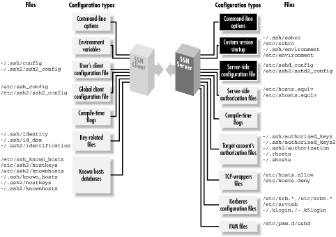

5.3. Server Configuration: An Overview
As mentioned at the beginning of the chapter, the behavior of the
server,
sshd, may be controlled at three levels:
- Compile-time
configuration (Chapter 4, "Installation and Compile-Time Configuration") is
accomplished when sshd is built. For example, a
server may be compiled with or without support for
rhosts authentication.
- Serverwide configuration, the subject of this
chapter, is performed by a system administrator and applies to a
running instance of the server. For instance, an administrator may
deny SSH access by all hosts in a given domain or make the server
listen on a particular port.
Serverwide configuration can be dependent on compile-time
configuration. For example, a server's trusted-host
authentication options work only if the server is compiled with
trusted-host authentication support included. Otherwise, the options
have no effect. We identify such dependencies throughout the book.
Figure 5-1 highlights the serverwide configuration
tasks.

Figure 5-1. Serverwide configuration (highlighted parts)
- Per-account
configuration (Chapter 8, "Per-Account Server Configuration") is
performed by the end user, specifically, the owner of the account to
which an SSH connection has been requested. For example, users may
permit or deny access to their own accounts from particular hosts,
overriding the serverwide configuration.
Suppose user deborah on the machine
client.unc.edu invokes an SSH client.
The clients's behavior is determined by the compile-time
options selected when the software was built, the machinewide client
configuration file on
client.unc.edu, deborah's own
client configuration file, and the command-line options used by
deborah when invoking the client. An SSH server running on
server.unc.edu accepts
deborah's connection to the account charlie. The server's
behavior is determined by the compile-time options used when
sshd was built, the machinewide server
configuration file on
server.unc.edu, the command-line options
used when the SSH server was run, and charlie's personal server
configuration file (e.g., an
authorized_keys
file), plus several files that set environment variables for the
successful login session.
With three levels of server configuration, and multiple entry points
for modifying the behavior at each level, things can get complicated.
In particular, different options may work together or cancel each
other. For example, user charlie can configure his account on
server.unc.edu to accept
connections from
client.unc.edu, while the system
administrator of
server.unc.edu can configure the SSH
server to reject them. (In this case, Charlie loses.) Administrators
must understand not only how to configure the server themselves, but
also how their choices interact with compile-time and per-account
settings.
5.3.1. Server Configuration Files
Serverwide configuration is accomplished in two ways: through a
server configuration file, or through command-line options. In a
server configuration
file, numerous configuration variables,
called
keywords,
may have their values set. For example, to set the TCP port on which
the server will listen, a configuration file can contain the line:
# SSH1, SSH2, OpenSSH
Port 1022
The configuration file is typically
/etc/sshd_config
for SSH1 and OpenSSH or
/etc/ssh2/sshd2_config
for SSH2. The file contains keywords and their values, as in the
Port example, with one pair (keyword and value)
per line. Keywords are
case-insensitive:
Port,
port, and
PoRt are all treated identically.
Comments may appear
in the file as well: any line beginning with a hash sign
(
#) is a
comment:
# This is a comment
To use a configuration file
other than
the default, invoke
sshd with the
-f command-line option, providing the alternative
filename as an argument:
# SSH1, SSH2, OpenSSH
$ sshd -f /usr/local/ssh/my_config
For SSH2, the configuration file format has the following extensions
in addition to keywords:
- Sections
- The label *: often appears at the beginning of
the configuration file, since it is present in the sample
configuration file distributed with SSH2. This actually serves no
purpose and is confusing; see the following sidebar.
- Subsystems
- Keywords
beginning with the string "subsystem-", such as:
# SSH2 only
subsystem-sftp sftp-server
indicate a subsystem, a predefined command that SSH2 clients may
invoke by name. Subsystems are a layer of abstraction and a
convenience feature. [Section 5.7, "Subsystems"]
What's That *: ?
The
sshd2_config
file supplied with SSH2 contains the following lines at the top, just
above the keyword settings:
# The "*" defines for all hosts
*:
This is unnecessary and misleading. In the client configuration file,
a colon introduces a labelled section of the
configuration file [Section 7.1.3.3, "Configuration file sections"], which limits the
following configuration statements (up to the next label, or the end
of the file) to apply only when the client is connecting to a host
whose name matches the label.
The section label syntax is also recognized in the server
configuration file, but it serves no purpose. The way the code is
written, the only label that can ever match on the server side is
*, and that is the effective default label,
anyway, so it is unnecessary.
The section label is misleading because it suggests you can label a
section in the server configuration file like this:
client.host.net:
AllowUsers smith
By analogy with the client configuration file, you might expect that
this restricts logins from the machine client.host.net to only accessing the
account "smith". This won't work. In fact,
statements labelled with anything besides * will
be silently ignored by sshd. Beware!
|
5.3.2. Command-Line Options
Additionally, when invoking the
server, you may supply command-line options. For example, the port
value may be specified on the command line with the
-p option:
# SSH1, SSH2, OpenSSH
$ sshd -p 1022
Command-line options
override settings in the configuration
file. Thus, if the configuration file says port 1022 but the server
is invoked with
-p 2468, the port used will be 2468.
Most command-line options duplicate the features found in the
configuration file, for convenience, while a few provide unique
functionality. For instance, the
-f option instructs
sshd to use a different configuration file, a
feature that's useless to put in a configuration file.
On the other hand, keywords don't necessarily have command-line
equivalents. Most SSH1 and OpenSSH keywords don't. Any SSH2
keyword, however, may be set by the
-o server
command-line option. For example, to set the TCP port number by this
method:
# SSH2 only
$ sshd2 -o "Port 1022"
5.3.3. Changing the Configuration
sshd
reads its configuration file at startup. Therefore, if you modify the
file while the server is running, the changes don't affect the
server. You must force the server to reread the file in order accept
the changes. This is done by sending a
SIGHUP signal to the server
process.
[56] The pid of the server is
found in a file, usually
/etc/sshd.pid
for SSH1,
/var/run/sshd2_22.pid for SSH2, or
/var/run/sshd.pid for OpenSSH. [
Section 5.4.1.3, "Process ID file"]
Suppose the PID file is
/etc/sshd.pid, the
default for
sshd1. To send the SIGHUP signal, run
the Unix
kill command:
$ cat /etc/sshd.pid
119384
$ kill -HUP 119384
or more succinctly, with backquotes:
$ kill -HUP `cat /etc/sshd.pid`
The SIGHUP signal restarts
sshd (with a different
pid) but doesn't terminate existing SSH connections, so the
signal is safe to send while clients are connected. The new
sshd process reads and conforms to the new
configuration.
The SIGHUP technique works only for settings in the configuration
file, not command-line options. To change those, you must kill and
restart the server with the new options. For example:
# SSH1, SSH2, OpenSSH
$ kill 119384
$ sshd new_options
5.3.4. A Tricky Reconfiguration Example
Because command-line options override
their configuration file equivalents, some interesting situations can
arise. Suppose the configuration file defines the number of bits in
the server key to be 1024:
# SSH1, OpenSSH
ServerKeyBits 1024
but the server is invoked with the
-b command-line
option, overriding this value with 512:
# SSH1, OpenSSH
$ sshd -b 512
The server uses a 512-bit key. Now, suppose you restart
sshd with SIGHUP:
# SSH1 only
$ kill -HUP `cat /etc/sshd.pid`
# OpenSSH only
$ kill -HUP `cat /var/run/sshd.pid`
forcing
sshd to reread the configuration file.
What do you think happens to the key length? Does the server set the
length to 1024 after rereading the configuration file, or does the
command-line option remain in effect for a 512-bit key? In fact, the
command-line option takes precedence again, and the key remains 512
bits.
sshd saves its argument vector (argv) and
reapplies it on restart.
 |  |  |
| 5.2. Running the Server |  | 5.4. Getting Ready: Initial Setup |